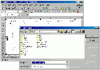

Release Notes
Download
Screenshots
Description
ExportChart Excel Add-In. Save your Excel charts to Gif files for use in web pages or graphic programs. Requires Microsoft Excel 97 or 2000.Release Notes
1.2b February 9, 2001- added German translation of add-in. Thanks to Edgar Hoffmann.
- moved each language translation into separate zip file and renamed each to ExportChart.xla. This way each new translation doesn't require a new version to be released.
- added Polish version of add-in. Thanks to Jaroslaw Maslanka.
- added global language variables to simplify conversions to other languages
- added Dutch version of add-in. Thanks to Bert Rijpkema.
- fixed: Auto_Close() would report an error if the Export Chart... menu item was not found (eg. if the user cancelled an exit and then tried to exit later)
- oops! A pre-release accidentally got released as v1.0! It should work now.
- first release
Download
| ExportChart version 1.2b for MS Excel 97/2000 | |
| Freeware (with source code) | ||
| ||
| Dutch translation | ||
| ||
| German translation | ||
| ||
| Polish translation |

Screenshots

The Save dialog is presented when the user clicks on Export chart... in the Chart menu.
{kind=link}